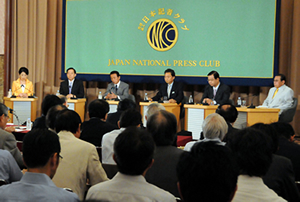
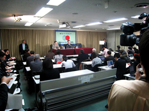

日本プレスセンタービルは、日本新聞協会加盟各社や製紙（新聞用紙）会社が出資する「株式会社日本プレスセンター」が所有し、日本の報道界の中枢としての機能を発揮しています。
諸外国の賓客や国内の重要人物を迎えての記者会見を主要な任務とする日本記者クラブ、新聞界の共同団体である日本新聞協会、外国の報道機関に取材の便宜を提供するフォーリン・プレスセンター、そして、新聞・報道各社の支社局や取材拠点などが入居しています。
日本記者クラブは、ジャーナリズムの発展に資することを目的として、新聞・通信・放送の報道機関により設立されました。政府の財政援助を受けない、非営利の独立したナショナル・プレスクラブです。国・公賓として来日する各国元首や首相はじめ国内の重要ニュースソース、話題の人などをゲストに迎え、記者会見、研究会などを開催しています。なかでも、国政選挙前に行う党首討論会は、毎回大きな注目を集めています。また、毎年、ジャーナリズムの信用と権威を高めた個人に「日本記者クラブ賞」を贈っています。
フォーリン・プレスセンター（FPC）は、日本新聞協会と経団連（現在は日本経団連）の共同出資により、1976年に設立された財団法人で、日本の実情を諸外国に正しく理解してもらうために、外国の報道関係者の日本取材を支援しています。日本では、約40カ国・地域の外国メディア200機関の記者600人（最新値はＦＰＣホームページご参照）が日本発のニュースを世界に発信しています。これに加え、数多くの外国報道関係者が取材のため訪日しています。FPCはこれら外国プレスからの各種問い合わせや個別の取材協力依頼に対応しているほか、外国プレス向け講演会や日本各地への取材ツアーの企画・運営、海外のジャーナリストの招待プログラムなどを通じて、世界に向けた積極的な情報発信活動を展開しています。
